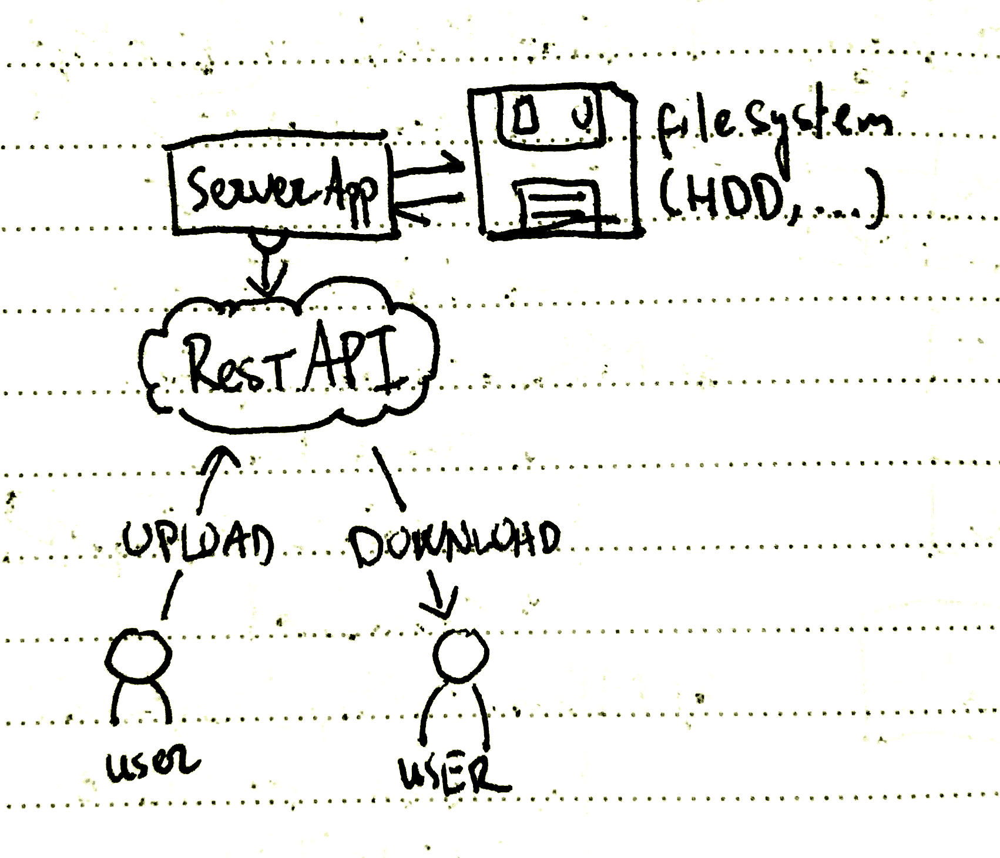
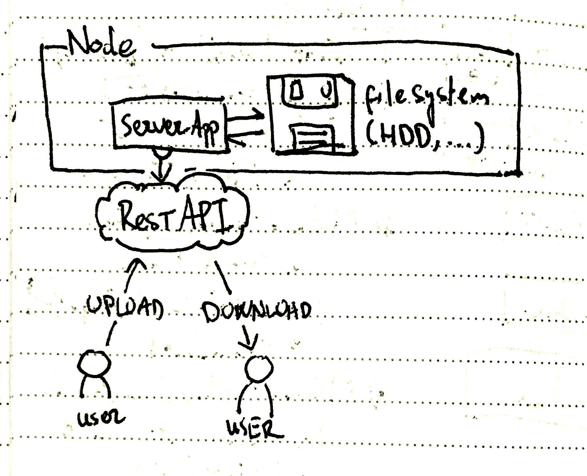
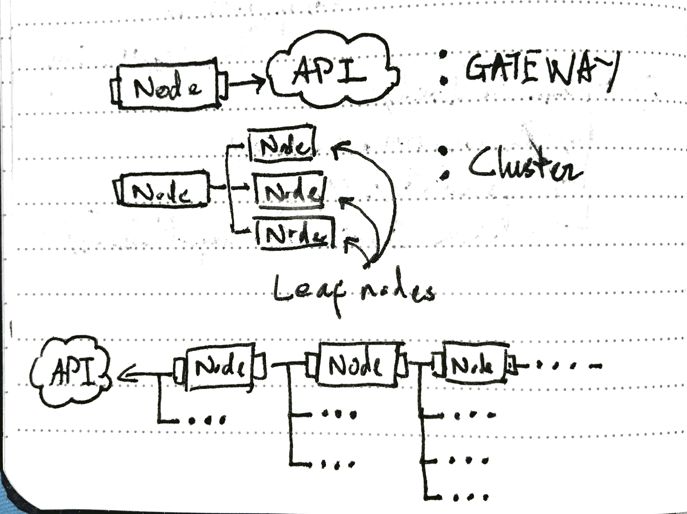
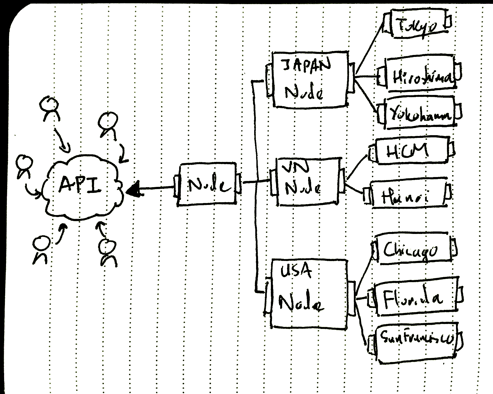
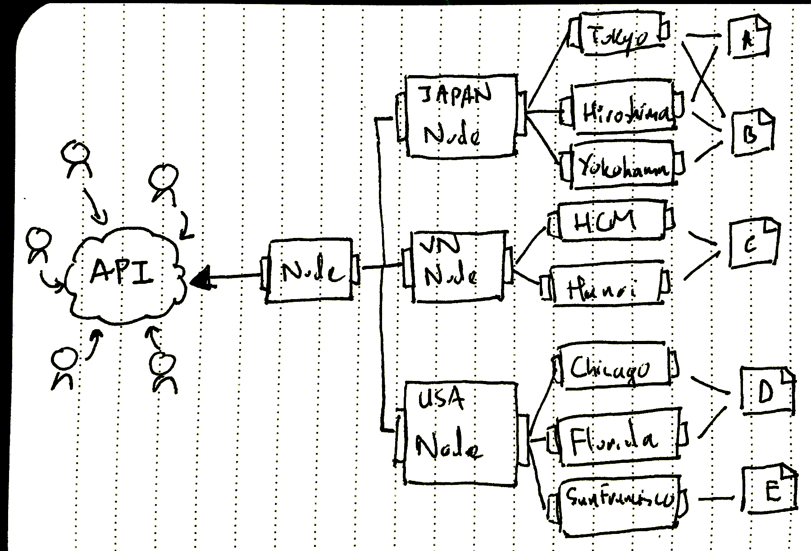
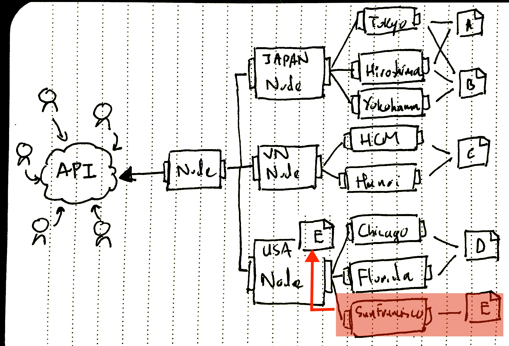
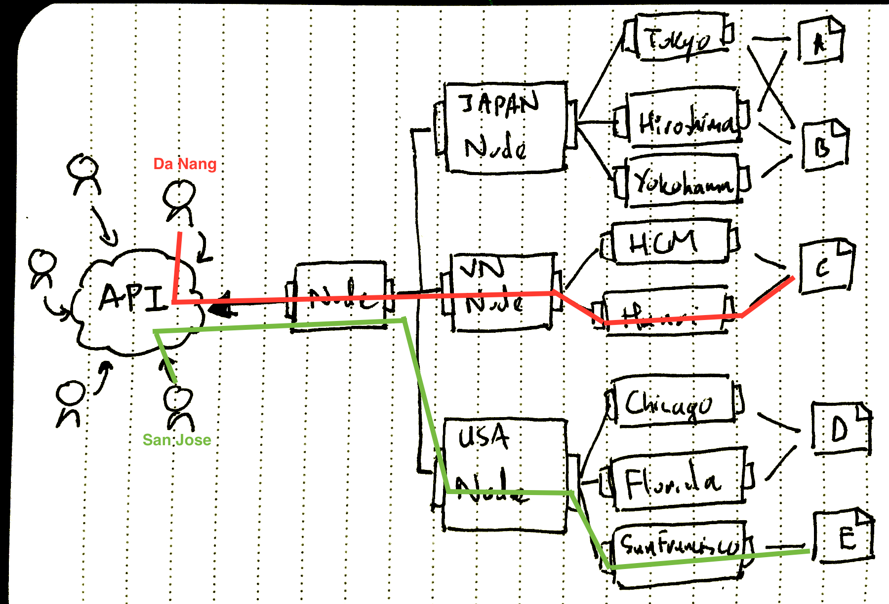

Legim Draft
Legim có nghĩa là LEGO Image Server, mang ý nghĩa là một app server ảnh có khả năng hoạt động độc lập hoặc có thể ghép nối lại một cách dễ dàng để tạo thành một hệ thống một cách dễ dàng giống như trò chơi LEGO.
Tổng quan hệ thông
Một cách tổng quát, cấu trúc hoạt động của Legim như hình sau:

Trong đó, server application là chương trình chính, sẽ kết nổi và quản lý các file hình ảnh nằm trên đĩa cứng, đồng thời cung cấp RESTful API để user có thể tương tác (upload hình ảnh, download hình ảnh,...)
Một node server
Node ở đây gọi là một nút, một khối gồm có: Server app và Đĩa cứng cấu thành một node trên hệ thống.

Và đây cũng là đơn vị cơ bản nhất của hệ thống.
Có 3 loại node tồn tại trong hệ thống, như hình sau:

Gateway Node
Các node không có node cha (parent node) sẽ được hiểu mặc định là các Gateway.
Trong một hệ thống Legim thì chỉ có Gateway node là có thể cung cấp REST API để giao tiếp với user.
Mặc định khi khởi tạo một server chỉ gồm một Legim node, thì node này sẽ được nhận diện là Gateway.
Cluster Node và Leaf Node
Các node con của gateway node có thể là Leaf Node (node lá), là các node không có node con hoặc các Cluster Node (là các node có chứa các node lá bên trong).
Cluster Node và Leaf Node sẽ không được quyền cung cấp REST API.
Các Cluster node sẽ kết nối trực tiếp tới Gateway.
Các Leaf Node sẽ kết nối trực tiếp tới Cluster Node.
Một node có thể chứa không, một hoặc nhiều (hoặc rất nhiều) node con, và tất cả sẽ tạo thành một đồ thị hình cây.
Khi một node lá được tạo ra, thì nó phải được chỉ định địa chỉ của node cha cần kết nối đến.
Hệ thống hình cây
Dựa vào cấu trúc hình cây, chúng ta có thể tạo ra một hệ thống gồm một gateway node ở trung tâm, và rất nhiều node con phân bố khắp nơi (về mặt địa lý) như hình sau:

Các cluster có thể được tạo ra ở nhiều địa điểm trên thế giới để đảm bảo tối ưu về mặt phục vụ.
Cơ chế "trào ngược" giúp backup dữ liệu
Giả sử ta có một hệ thống với các file A, B, C, D, E được phân bố như hính sau:

Khi một node bị tắt đi, hệ thống sẽ tiến hành tắt toàn bộ các node con của nó sẽ bị tắt trước, sau đó mới đến chính node đó bị tắt.
Trong quá trình tắt node, hệ thống sẽ tiến hành "trào ngược" (phun ngược =))) dữ liệu từ node bị tắt lên node cao hơn (node cha), như hình sau:

Node San Francisco bị tắt đi, file E của node này sẽ được chuyển lên node USA. Nếu cần thiết, node USA có thể chuyển file E về các node Chicago hoặc Florida để giảm tải.
Load balancing
Khi một user request một hình ảnh, request sẽ đi qua REST API và đi vào Gateway server, tại đây, request sẽ được phân phối về server nào có chứa hình ảnh cần load và có độ trễ (latency) thấp nhất (để đảm bảo tốc độ), thường là server nằm gần nhất.
Ví dụ hình sau, một user từ Đà Nẵng có thể request tới hệ thống và nhận được file nằm tại server Hà Nội, còn một user từ San Jose có thể nhận được file từ server San Francisco.

Scaling
Legim được thiết kế để giúp cho việc scaling diễn ra một cách it tốn kém nhất.
Khi cần loại bớt server, chúng ta có thể dễ dàng thực hiện bằng cách tắt bớt các leaf node hoặc cả một cụm cluster. Cơ chế backup dữ liệu theo kiểu "trào ngược" (dữ liệu từ node con sẽ đi hết lên node cha trước khi node con bị tắt) sẽ đảm bảo tính toàn vẹn dữ liệu.
Khi cần thêm vào một server, chúng ta chỉ cần khởi động legim trên một máy tính mới, và chỉ định file config cho server mới có dạng như sau:
node:
port: 8888
parent:
ip: 10.0.0.6
port: 3333
Trong đó, máy tính ở địa chỉ 10.0.0.6:3333 là server cha cần kết nối tới, và server hiện tại chạy trên cổng 8888.